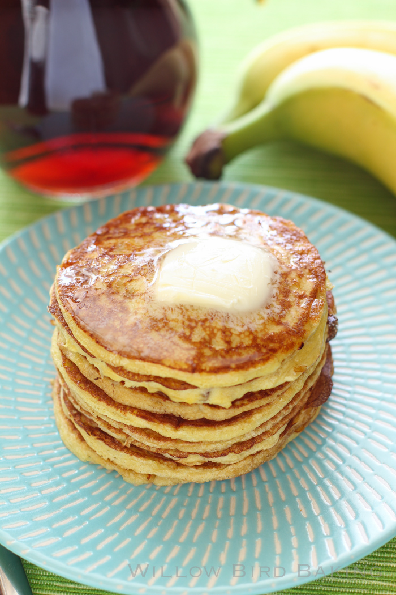

Protein Pancakes

A simple, high protein breakfast
This recipe comes courtesy of 4x Mr. Olympia Jay Cutler. He featured this on his website many years ago as a go to when he was travelling. I can attest that it is not only easy to make, but delicious to boot!
Ingredients:
- Note: all of this can be scaled as long as you use equal parts of each item
- 1/2 cup liquid egg whites
- 1/2 cup fat free cottage cheese
- 1/2 cup quick oats
Steps:
- Mix all ingredients in a blender on highest setting until a smooth batter is formed
- Pour batter into non-stick pan over medium heat until desired pancake size is reached
- Cook until golden-brown, flipping once to cook both sides
- Drizzle with butter or your favorite syrup and enjoy